Process
Pristine was nothing like how Mint expected the final project to be.
She has always wanted to try more expressive styles but after all the initial sketches,
she ended up choosing a more sober path. The original idea was to create a Thai–Latin
type family where both scripts influence each other equally — an exploration of cross-script
design without defaulting to one script as the master.
The project started with a Thai italic drawn alongside a Latin italic. The initial Thai
sketch aimed to find a space between traditional looped and loopless styles — resulting in
soft, organic shapes with semi-loop features. In this early version, the “drop” terminals
(teardrop-shaped endings) were important for the legibility of Thai. For Latin, however, those same
terminals served more of a decorative purpose.
As the design evolved, the focus gradually shifted from italic to roman. The drops in Latin became
more structurally integrated, while the Thai moved toward a loopless model — still expressive,
but more restrained and contemporary.
Once the parameters of the project became clear — broad-nib contrast, sans serif structure — the
challenge was to find the right balance between the two scripts. Each demanded its own design
solutions, but the goal was a shared tone of voice. Designing a multi-script typeface isn’t just
about visual harmonization; it requires a deep understanding of how each script behaves in
its native environment — both functionally and culturally.
Every script carries historical and emotional associations. In Thai, broad-nib writing takes the
form of Thai blackletter, also known as Thai Naris. Unlike its Latin counterpart, Thai blackletter
has no roots in medieval manuscripts. Instead, it’s deeply connected to street culture — Chinatown,
pawn shops, market vendors, food stalls. Its tone is loud, practical, and unmistakably local.
Pristine was designed to move away from that traditional Thai blackletter tone. The goal wasn’t
to reject the broad-nib logic, but to reinterpret it — to ask what a contemporary Thai broad-nib
voice might sound like. Latin was treated with equal care. In Pristine, Latin and Thai don’t
just sit side by side — they shape one another. The final design is the result of mutual accommodation,
not compromise.
It’s not just about soft, round terminals or sharp-cut stems. It’s about rethinking familiar styles
and expanding the expressive range of both scripts — together.

 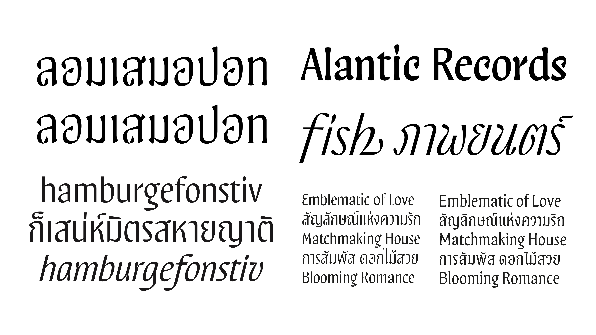
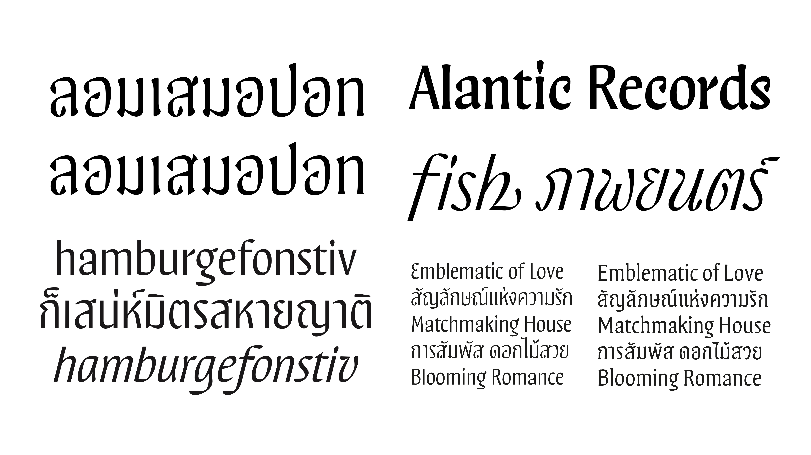
 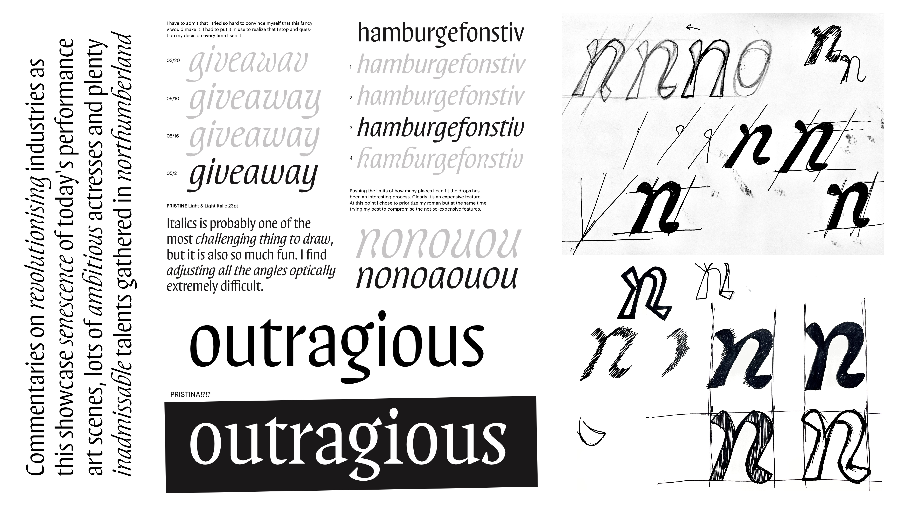
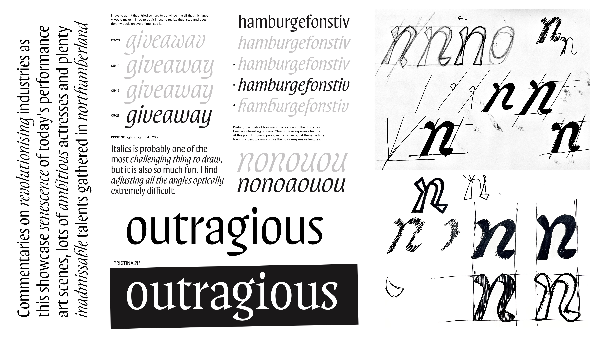

 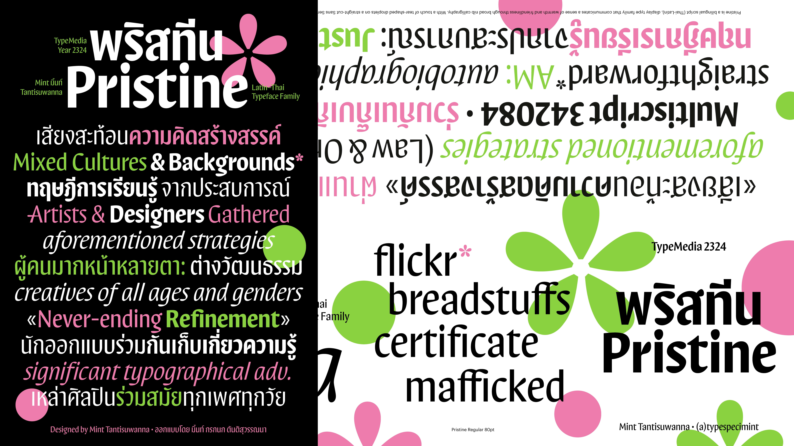
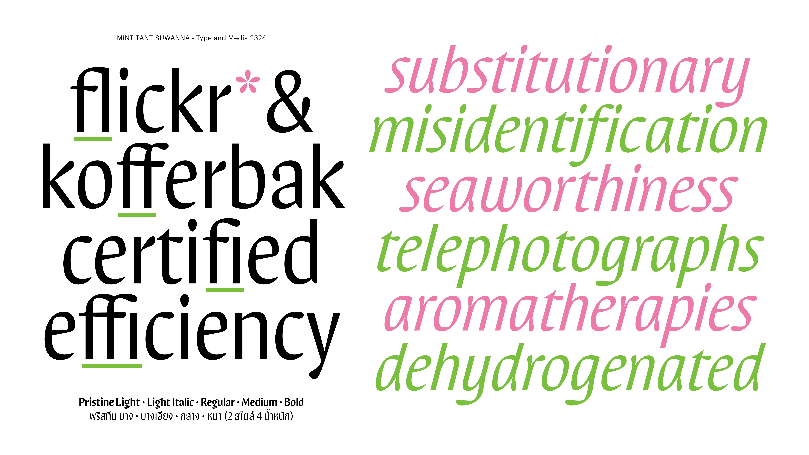
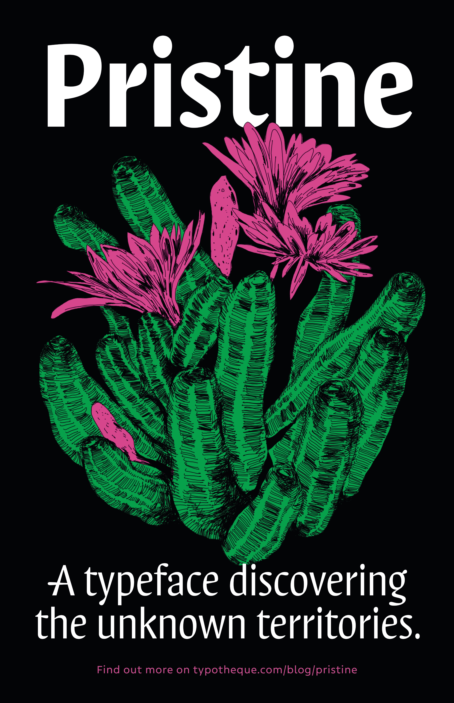
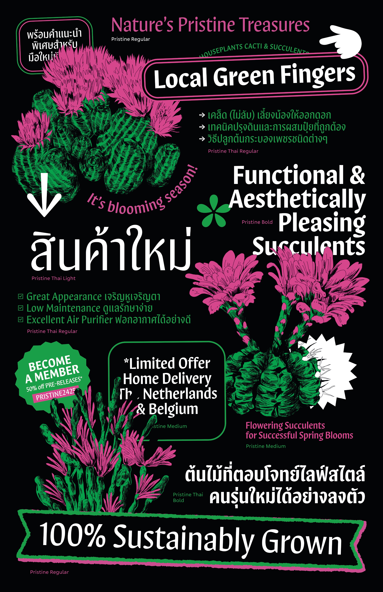
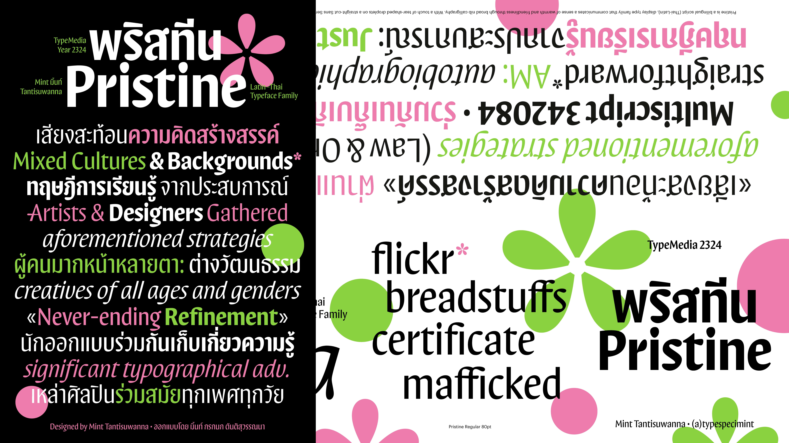
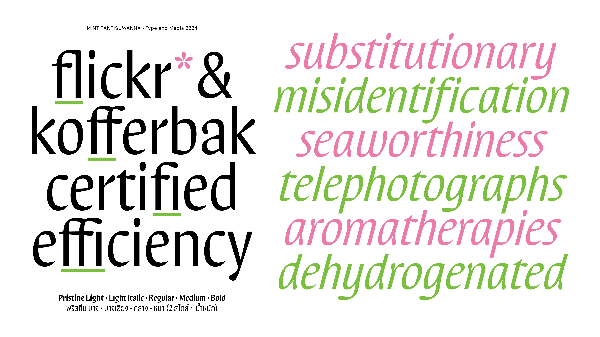
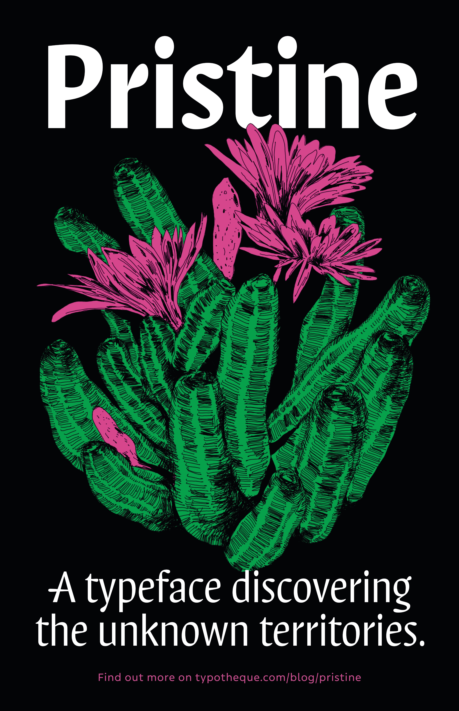
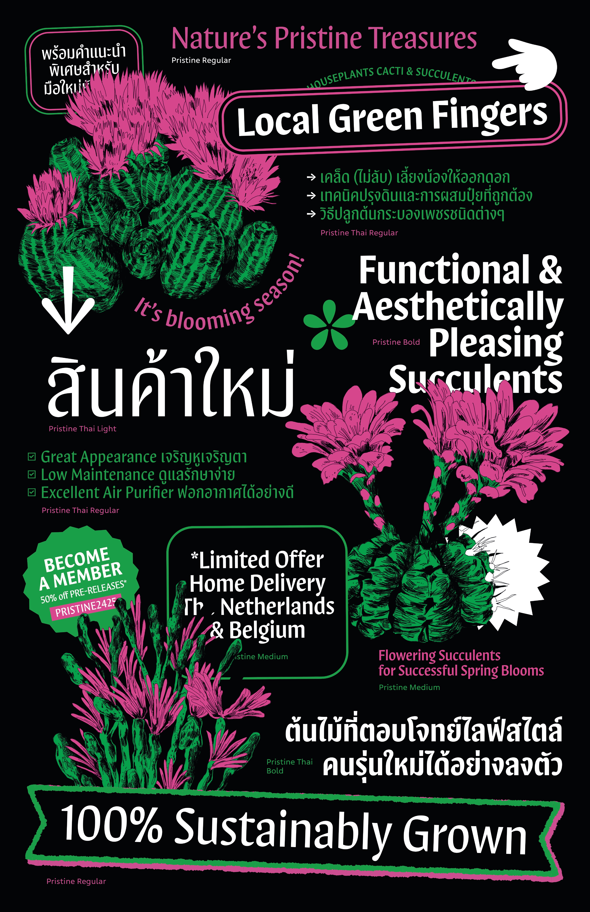